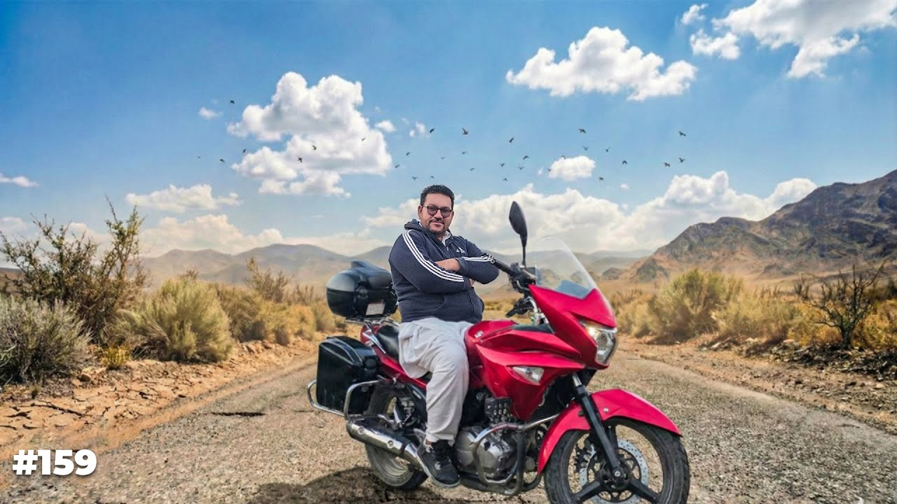
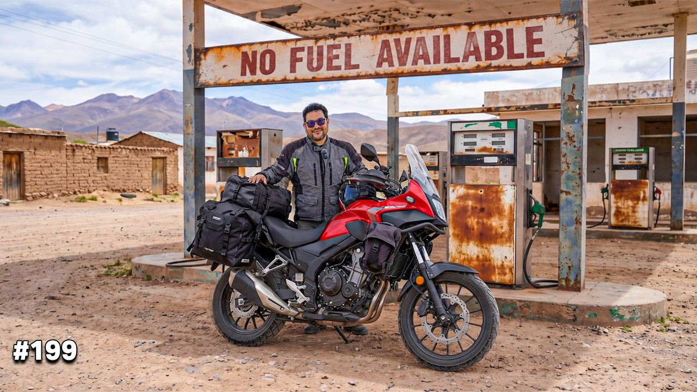
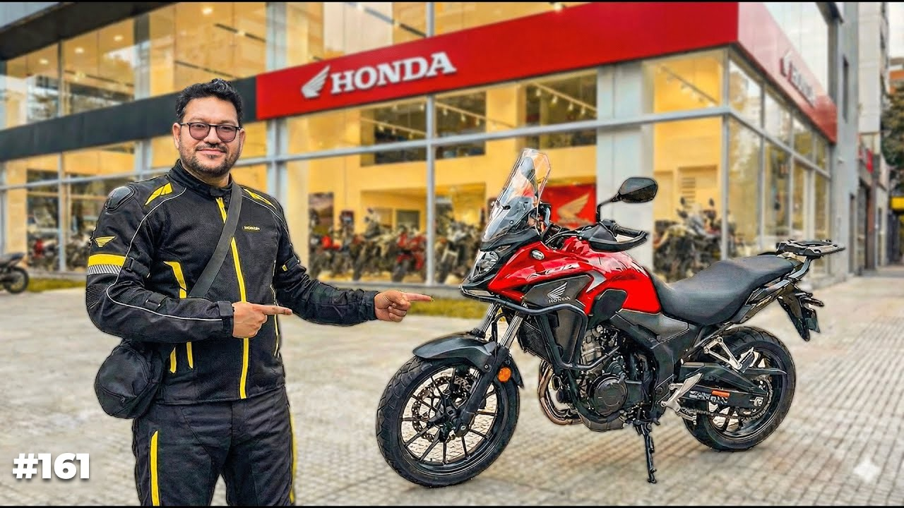
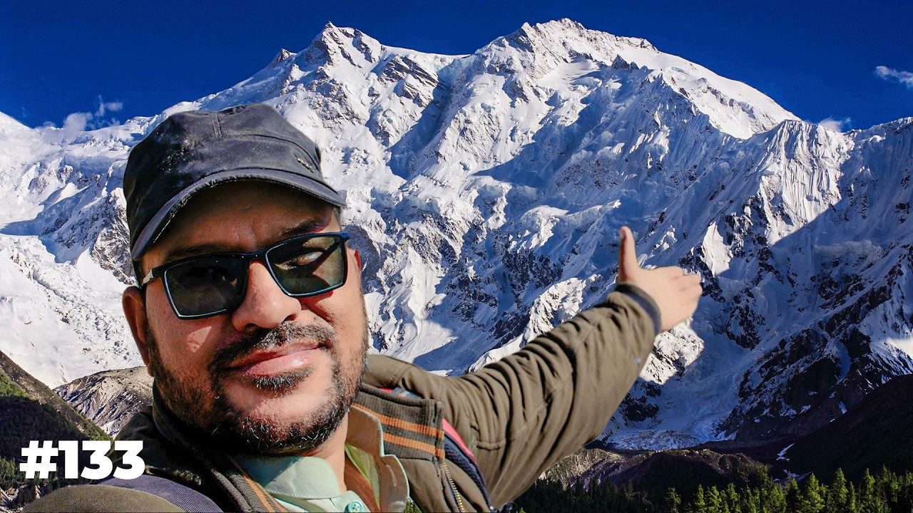
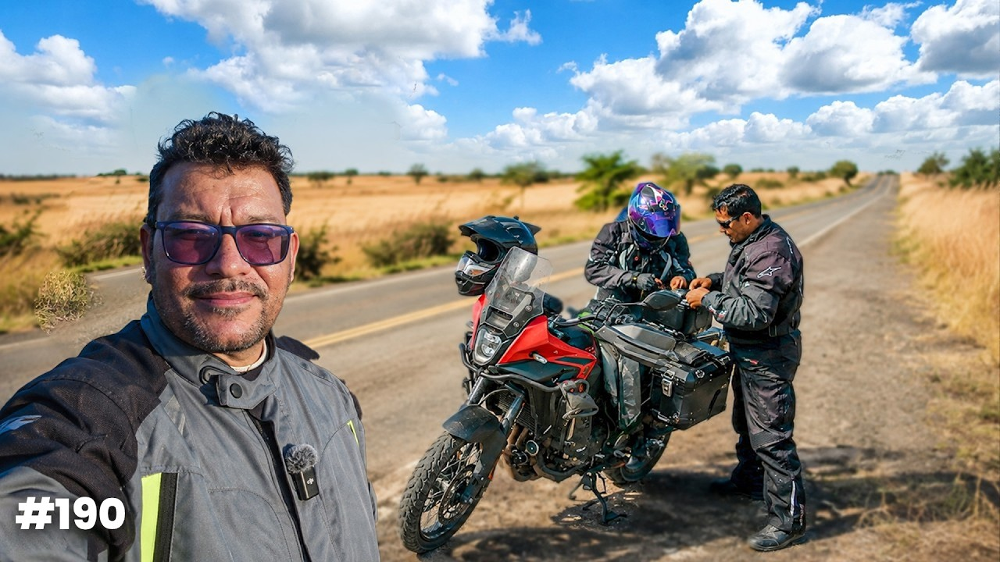
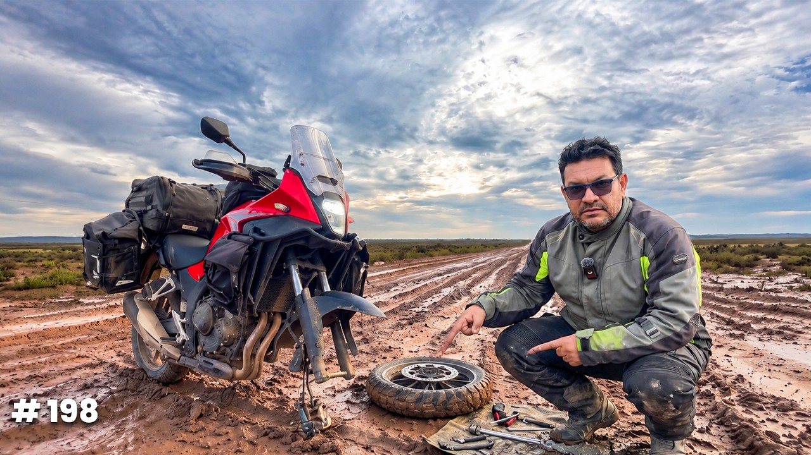

The first Sherdil
Suzuki Inazuma 250
This is the bike the Pakistan films were ridden on. Story 159 is the day he collected it in Quetta, after eight months away, and rode it to Diwali in Tharparkar.
Watch Story 159
آوارہ گرد Story 199 · Bolivia
Yahya Khan films the long way, alone, and numbers every film. The motorcycle is called Sherdil. The one he is riding now is a Honda NX500, bought in Brazil and pointed south.
01
Each Sherdil is a stretch of road. The films are the record of where that bike went.

The first Sherdil
This is the bike the Pakistan films were ridden on. Story 159 is the day he collected it in Quetta, after eight months away, and rode it to Diwali in Tharparkar.
Watch Story 159
Sherdil, again
470cc. Picked up in Brazil in Story 161, because the old Sherdil could not make this ride. The soft luggage on the Amazon stretch was sponsored by Vesim. Everything after Brazil is this bike.
Watch Story 161میرا نام یحییٰ خان ہے اور آوارہ گردوں کی دنیا میں ہم آپ کو خوش آمدید کہتے ہیں
“Mera nam Yahya Khan hai, aur awaragardo ki duniya mai hum apko khushamdeed kehte hain.”
He opens every film with it. Welcome to the world of the wanderers.
02
Not a map of everywhere. The stops that have a film, in the order the road ran.

Story 133 · Pakistan
The killer mountain, on the first Sherdil’s roads.
Story 159 · Sindh
Sherdil is back. Quetta to Diwali in the desert.
Story 160
The ride changes continents. He leaves from Peshawar, and the next Sherdil is waiting on the other side.
Story 161 · Brazil
Honda NX500. The bike for the rest of the journey.

Story 190 · Brazil
About 2,100 kilometres in. Brazilian riders stopped and helped.

Story 198 · Bolivia
Three hundred kilometres of mud. The rim gave out. He fixed it on the road.
Story 199 · Bolivia
The bike is ready again. The next pump is not.
03
Public counts from early November 2026. TikTok is the handle only. The number was not public.
04
A stretch of the journey, a film shot from the bike, or a longer season. The work is the ride, not a studio day.
آوارہ گرد God first. Camera second.